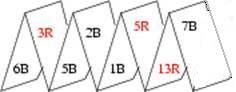

2009 ICPC World Finals · Problem G
Axel and Birgit like to play a card game in which they build a house of cards, gaining (or losing) credits as they add cards to the house. Since they both have very steady hands, the house of cards never collapses. They use half a deck of standard playing cards. A standard deck has four suits, two are red and two are black. Axel and Birgit use only two suits, one red, one black. Each suit has 13 ranks. We use the notation 1R, 2R, …, 13R, 1B, 2B, …, 13B to denote ranks and colors.
The players begin by selecting a subset of the cards, usually all cards of rank up to some maximum value M. After shuffling the modified deck, they take eight cards from the top of the deck and place them consecutively from left to right to form four “peaks.” For instance, if M = 13 and if the first ten cards (from 26) are:
6B 3R 5B 2B 1B 5R 13R 7B 11R 1R ...
then the game starts off with four peaks and three valleys as shown in Figure 7.

The remaining cards are placed face up, in a single row.
Each player is identified with a color, red or black. Birgit is always black and Axel is always red. The color of the first card used for the peaks and valleys determines which player has the first turn. For the example in Figure 7, Birgit has the first turn since the first card is 6B.
Players alternate taking turns. A turn consists of removing the card from the front of the row of cards and then doing one of the following:
1. Holding the card until the next turn (this is a “held card”).
2. Covering the valley between two peaks with the drawn card or the held card, forming a “floor.” The remaining card, if any, is held.
3. Placing two cards over a floor, forming a peak (one of the cards must be a “held” card).
Not all options are always available. At most one card may be held at any time, so the first option is possible only if the player is not already holding a card.
Since the cards in the row are face up, both players know beforehand the order in which the cards are drawn.
If the player forms a downward-pointing triangle by adding a floor, or an upward-pointing triangle by adding a peak, then the scores are updated as follows. The sum of the ranks of the three cards in the triangle is added to the score of the player whose color is the same as the majority of cards in the triangle. If no triangle is formed during a play, both scores remain unchanged.
In the example from Figure 7, if Birgit places her card (11R) on the middle valley, she gains 14 points. If she places her card on the left valley, Axel gains 19 points. If she places her card on the right valley, Axel gains 29 points.
If no more cards remain to be drawn at the end of a turn, the game is over. If either player holds a card at this time, the rank of that card is added to (subtracted from) that player’s score if the color of the card is the same as (different from) that player’s color.
When the game is over, the player with the lower score pays a number of Swedish Kronor (Kronor is the plural of Krona) equal to the difference between the two scores to the other player. In case of a tie there is no pay out.
You must write a program that takes a description of a shuffled deck and one of the players’ names and find the highest amount that player can win (or the player’s minimum loss), assuming that the other player always makes the best possible moves.
The input file contains multiple test cases representing different games. Each test case consists of a name (either Axel or Birgit), followed by a maximum rank M (5 ≤ M ≤ 13), followed by the rank and color of the 2M cards in the deck in their shuffled order. Every combination of rank (from 1 through M) and color will appear once in this list. The first eight cards form the initial row of peaks from left to right in the order drawn, and the remaining items show the order of the rest of the cards.
The final test case is followed by a line containing the word End.
For each test case, print the test case number (starting with 1), the name of the player for the test case, and the amount that the player wins or loses. If there is a tie, indicate this instead of giving an amount. Follow the sample output format.
Axel 5 1R 2R 3R 4R 5R 5B 4B 3B 2B 1B Birgit 5 1R 2R 3R 4R 5R 5B 4B 3B 2B 1B Birgit 5 1R 1B 3R 4R 5R 5B 4B 3B 2R 2B End
Case 1: Axel wins 1 Case 2: Birgit loses 1 Case 3: Axel and Birgit tie